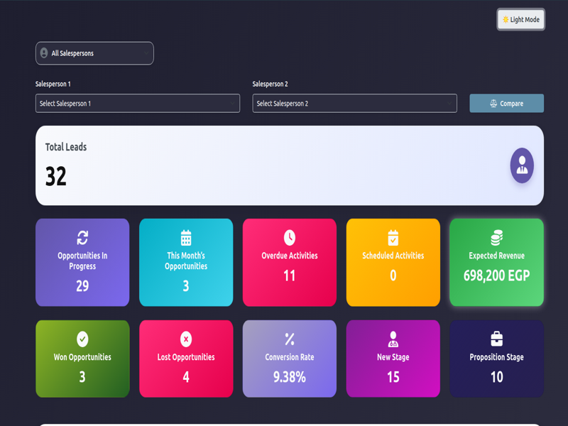

A visually enhanced CRM dashboard for Odoo 17 that gives you real-time insights into your sales team performance, pipeline health, and lead metrics — all in a single, interactive interface.
This main dashboard displays a real-time overview of your sales KPIs including total leads, open opportunities, expected revenue, conversion rate, and more. The layout supports both light and dark modes for a comfortable viewing experience.
Visual breakdown of the most common reasons why opportunities were lost — whether due to pricing, lack of resources, or other constraints. Helps managers focus on real sales blockers.
A powerful tool to compare sales performance between any two salespeople using real-time pie charts. Useful for team reviews, coaching, and setting sales goals.